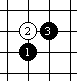
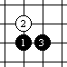
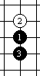
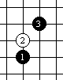
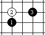
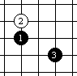
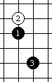

直指开局八月助记诗(二首)
#1 直指开局八月助记诗(二首) 作者：星月族 发表时间：2009-12-23 11:12:55
岁寒三友
（花雨丘松四月助记诗）
花斜并开梅枝上，
雨中齐放双比肩。
丘南竹影偏东去，
松下三友共岁寒。
寄情山水
（溪残新山四月助记诗）
溪上品茗日已偏，
残阳如画挂天边。
新辰初启斜阳落，
山下何日有洞天。
释义:
岁寒三友（花雨丘松四月助记诗）“以梅竹松”岁寒三友为主线，每句第一字为四月名称，第二字点明第三手与第一手的关系，整句说明该局的基本棋型。
 花斜并开梅枝上：花月开局中黑3在黑1斜上方并连，如同斜支上两朵并开的梅花。
雨中齐放双比肩：雨月开局中黑3与黑1横向并连，就象两朵梅花在雨中比肩绽放。
松下三友共岁寒： 松月局黑3在黑1的正下方，且与白2连成一列，如同“松竹梅”岁寒三友共同迎风傲雪。
寄情山水（溪残新山四月助记诗） 以一天中尽享山水之乐为主线，每句第一字为四月名称，各句中都带有“日（阳）”字，与其它字共同说明该局的基本棋型。
溪上品茗日已偏：溪月开局黑3在黑1斜上且呈“日”字。想象中独坐空山小溪之上品味香茗，是何等惬意啊，不知不觉日已偏沉、一天将过了。
残阳如画挂天边：残月开局借用围棋术语“挂”点明黑3和黑1的关系呈横“日”字。想象中一边品茗一边欣赏夕阳如画的美景，但时近黄昏，只好收拾茶具以便在天晚之前下山了。
新辰初启斜阳落：新月开局黑3在黑1所在横线之下呈横“日”字，如同夕阳落山，白2如同刚刚升起的新星。想象中走下山时已是斜阳落山、启明初升的日暮时分。
山下何日有洞天：山月开局黑3在黑1的斜下方呈“日”字。想象中结束了一天纵情山水的逍遥游，回到山下“柴米油盐”的现实生活中，感叹什么时候才能再领略山上那“别有洞天”的闲适生活啊。